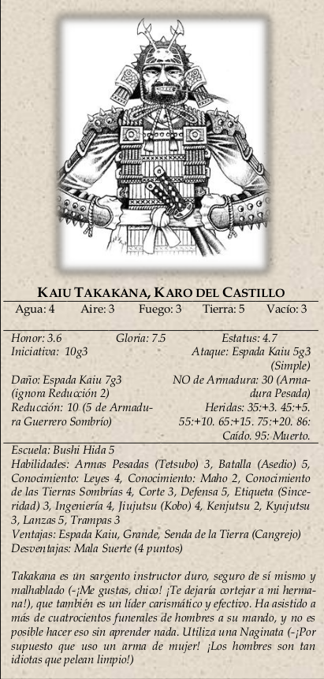

|  | Kaiu Takakana (Gloria 7.5, Estatus 4.7): Karo del castillo, es el
responsable de la seguridad de la corte. Controla el acceso a Kisada, y cuando atacan las Tierras Sombrías
controla quién tiene acceso al arroz y al jade y quién no. Cuando no hay nadie entrevistándose con Kisada,
lo está haciendo él. Es completamente consciente de que los cortesanos no llevan el pánico demasiado bien. |